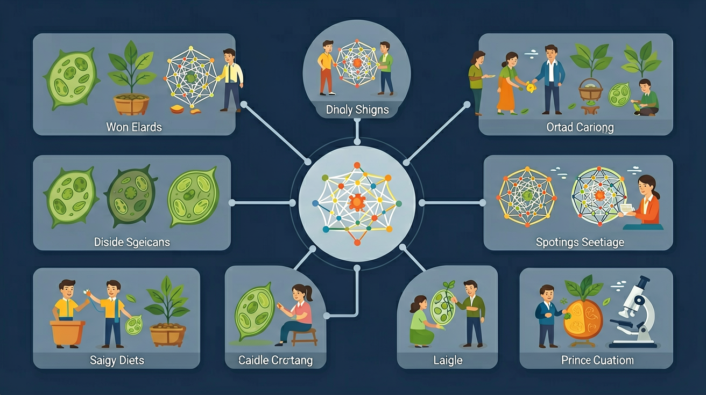

理解生态系统中"谁吃谁"的关系，以及能量如何在生物间流动

🎯 能说出食物链至少包含生产者、消费者、分解者三类角色
🎯 能判断给定生物在食物链中的营养级（如初级/次级消费者）
🎯 能分析人为破坏食物网对生态系统稳定性的影响
自然界中，生物之间普遍存在"吃"与"被吃"的关系——草被虫吃，虫被鸟吃，鸟又被鹰捕食……
如果某地区的狼被全部猎杀，鹿的数量会无限增长吗？这种"吃与被吃"的关系对生态平衡有多重要？
本课将带你认识食物链的书写规则、食物网的结构，理解能量流动方向，学会分析食物网中的数量变化。
生产者→消费者的捕食链
多条食物链交织形成的网
单向流动，逐级递减
食物网维持生态系统稳定
❓ 为啥老鹰吃兔子就叫食物链，我吃汉堡算不算？
❓ 食物网画得像蜘蛛网，要是断了一根会怎样？
❓ 都说'大鱼吃小鱼'，那小鱼死了被细菌分解算哪一环？
学完这一课，这些问题你都能自信地回答。
下列哪项是完整的食物链？
食物链中能量流动特点是？
在生态系统中，生物之间因捕食关系而形成的链状联系叫食物链。
📌 书写规则：
在一个生态系统中，多条食物链交织在一起，形成复杂的网状结构，称为食物网。
食物网越复杂，生态系统的自我调节能力越强，越稳定。
能量沿食物链单向流动、逐级递减：
前面说到能量"逐级递减"，但为什么会递减？我们从三个角度把它想透。
🔢 代数算一算：假设草固定了 10000 kJ 的太阳能，按约 10% 的传递效率往下走：
10000 kJ
1000 kJ
100 kJ
10 kJ
1 kJ
每升一级只剩约十分之一，到鹰这里只剩当初的万分之一。
💧 类比理解：把能量想成一桶桶水，每个营养级都在"接力运水"，但每传一桶就漏掉 90%，到最后一棒桶里几乎没水了。
🔥 根本原因：每个营养级的生物都要呼吸、运动、维持体温，这些生命活动把大部分能量变成热散失到环境里（能量转化有方向，热不能自发变回可用能量）。所以能量只能单方向流动，不能循环。
📏 重要推论：正因为每级只剩约 10%，一条食物链一般只有 4~5 个营养级，很少超过 6 级——再长就养不活顶级捕食者了。这也解释了"为什么吃素比吃肉更节省能量"。
把每个营养级的"量"自下而上叠成金字塔，可以比较三个维度：
🔑 关键洞察：无论数量或生物量怎么"倒"，能量金字塔始终正立——能量才是生态系统真正的"硬通货"。
DDT、重金属（如汞）这类物质，生物难以分解、也难排出，会积存在脂肪里。
它们沿着食物链从低营养级流向高营养级，每升一级浓度就放大一截：浮游生物 → 小鱼 → 大鱼 → 鹰，鹰体内的 DDT 浓度可能比海水高出数万倍。
🤔 为什么越积越多：顶级捕食者处在食物链顶端，一生吃掉无数被污染的猎物，"积少成多"。
🌍 启示：保护生态要算"总账"——哪怕少量污染，也会在食物链顶端被放大成巨大危害。
点击下方按钮，观察食物网中能量流动的动画。
用箭头拆解'树→虫→鸟→蛇'的能量流动方向
箭头方向代表能量传递而非生物移动
对比食物链（单线）与食物网（多线交织）的结构差异
观察生态瓶中藻类→水蚤→小鱼的能量流动实例
用食物网解释农田滥用农药导致害虫增多的现象
点击生物按顺序添加到食物链（从生产者开始）
关于食物网的说法正确的是
设计一个可维持1个月的小型封闭生态系统
你已经学过biosphere-scope，具备继续探索的底座；在日常生活中，你也早就接触过与「食物链与食物网 — 七年级生物互动课件」相关的现象。
但当问题换了一个情境出现——需要你解释原因、做出判断或解决实际任务时，仅凭零散的旧知识就很容易卡住。
所以本课用一个贯穿的情境任务，带你把「食物链与食物网 — 七年级生物互动课件」拆成可操作的步骤：先看懂它，再动手试，最后用练习和迁移把它变成自己的能力。
先独立作答，再点选项查看对错与错因。
若该池塘中鹭鸟捕食锦鲤，正确表示这条食物链的是
大量捕捞锦鲤后池塘可能发生
该池塘生态系统的分解者包括
写出该池塘中最短的食物链：____→____→锦鲤
答案：水草→螺
需包含生产者和初级消费者
若引入外来鱼种大量捕食螺类，会导致水草数量____
答案：增加
螺类减少使水草被啃食量下降
✅ 能量传递效率约10%，通常不超过5个环节
💡 忽视能量金字塔的损耗规律
✅ 分解者应同时连接所有生物层级
💡 误解分解者的跨营养级作用
口诀：生产者打基础，消费者吃口福，分解者收尾忙，能量单向流动强
类比：像快递链：植物是发货站，动物是配送站，细菌是回收站
食物链书写三要素：①生产者开始 ②箭头朝向吃者 ③不含分解者
能量流动规律：单向，逐级递减，效率10%~20%
营养级口诀：草（一）→兔（二）→狐（三）→鹰（四）
生物富集警示：难分解的污染物沿食物链向顶端放大，保护生态要算"总账"。
（中考真题）某湿地食物网中，若捕捞全部食肉鱼，短期内会怎样？
（迁移题）垃圾分类有助于维护食物链，因为？
生态瓶设计时，为什么要加入水草？
当前节点在中间列高亮显示